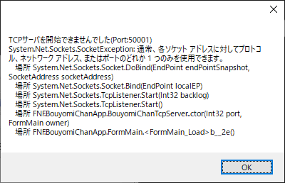
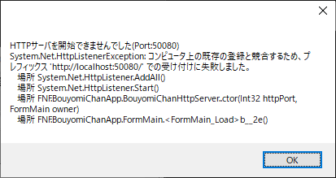

うまく動かないときは
Contents
うまく動かないときは¶
Failed to load settings.xmlと出てくる¶
“場所かチャンネル名が同じ設定になっています”と出る¶
settings.xmlに書いている場所かチャンネル名が、別の棒読みちゃんの設定と同じになっています。
それぞれの場所の棒読みちゃんに設定した名前を確認して、settings.xmlを書き直してください。
起動はするけど喋ってくれない¶
Connectedにならない¶
MultiBouyomiChanSelector側の設定ファイルで、棒読みちゃんの名前が間違っているかもしれません。 棒読みちゃんの場所と名前を対応させてください。
TCPサーバーが起動しないとか出てくる¶
 
それぞれの棒読みちゃんの設定ファイルで、以下をfalseにしてください。
<EnableSocket>true</EnableSocket>
<EnableHttpd>true</EnableHttpd>
BouyomiChan - Logというウィンドウが出る¶
BouyomiChanが読み上げ文の解釈に失敗したお知らせです。
何もしてないけど音が鳴らなくなった¶
MultiCommentViewerもMultiBouyomiSelectorも棒読みちゃんも動いている¶
棒読みちゃんの（仮想）オーディオデバイス設定が変わっているかも知れません。
棒読みちゃんはオーディオデバイス情報をIDで管理しています。 オーディオデバイスの増減によってIDが変わる場合があるようなので、基本設定->音声出力デバイスの設定を確認すると良いかも知れません。
黒い画面が出てくる¶
仕様です。 最小化しておいてください。